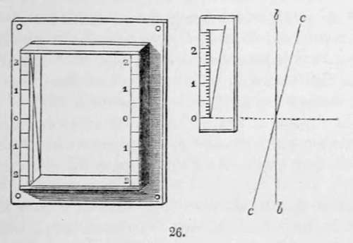

Section II. Instruments For Measuring Actinic Variations, Etc. Continued
Description
This section is from the book "A Manual Of Photography", by Robert Hunt. Also available from Amazon: A Manual of Photography.
Section II. Instruments For Measuring Actinic Variations, Etc. Continued
The instrument is made to move by applying the hand on a handle fixed on the back at the extremity of the axis on which the disc revolves. An operator accustomed to count seconds by memory, or by following a seconds' beater, can perform the experiment with sufficient regularity; but in order to render the instrument more exact and more complete, it can be made to revolve by clock-work, which gives it, at will, either the arithmetical or the geometrical progression. This last movement presented some difficulty; but the inventor has been able to obtain it without much complication in the machinery, and the apparatus is within the reach of the greater number of operators having establishments on a complete footing.
For the instrument moving by hand, it is necessary that a second person should open and shut the object-glass at a given signal. But in adapting before the object-glass a flap connected with a cord and pulley, the operator, holding the cord in the left hand, can open the flap at the moment that with the right hand he makes the disc revolve, and shut the apparatus when the revolution is complete.
When the instrument acts by clock-work, the object-glass may be opened and shut by the same means, at the signal given by a bell which strikes at the commencement and at the end of the revolution.
If a daguerreotype plate receive the image of the dynactino-meter during its revolution, it is obvious that each segment indicates an effect in proportion to the intensity of light and to the time that it has remained uncovered; also that the number of seconds marked on the first segment visible is the measure of the intensity of light at the moment of the experiment; the effect of each segment being in reality the degree of intensity which can be obtained during the corresponding time.
When we want to compare two object-glasses, they are adapted to two cameræ obscuræ placed before the dynactinometer. After having set the focus of the two apparatus, they are charged each with a daguerreotype plate or a photogenic paper. When all is ready, the flaps are opened at the moment that the dynactinometer commences its revolution, and they are shut when it is completed. The plates are removed and the images brought out. In comparing the result produced on each, it is easy to see which object-glass is the most rapid, and in what proportion. For instance, if the arithmetical progression has been followed, and on one of the plates or papers the number 4 of the great circle is the first visible, the conclusion is that it has been necessary for the intensity of the light at that moment to operate during four seconds in order to produce an effect in the camera obscura; and if, on the other plate or paper, the first seven segments have remained black, and the eighth segment is the first upon which the light has operated, the conclusion will be that the object-glass which has produced the effect on the first plate or paper has double the photogenic power of the other.
But if the geometrical progression has been followed, the same experiment will show the image of the segment No. 3, represented on one plate, and that of the segment No. 4 on the other, as having each the first degree of intensity: and we have to draw the same conclusion as regards the power of each object-glass.
However, this conclusion would be exact only on the supposition that the two plates were endowed with the same degree of sensitiveness: for if they had not been prepared identically in the same manner, we could not have the exact measure of the comparative power of the two object-glasses. The difference might be due, not to any difference in the power of the object-glasses, but to the inequality in the sensitiveness of the two plates; although, in repeating the experiment several times, the mean result might be sufficiently conclusive. But this difficulty has not escaped the inventor, and he has tried to avoid it. Being able, by means of the photographometer, to compare the sensitiveness of two plates under the action of the same intensity of light, and during the same space of time, he availed himself of this instrument to determine beforehand the comparative sensitiveness of the plates which are to be used in the experiment with the dynactinometer. By this means we can try beforehand several couples of plates, and keep them as it were stamped with their degree of sensitiveness until we want to apply them to test the power of two lenses. The impression is made on one-half of the plate, leaving the other half for the image of the dynactinometer.
After having operated in the two cameræ obscuræ, each supplied with the lenses the power of which we wish to compare, we submit the two plates, each impressed with both the photo-graphometer and dynactinometer, to the vapour of mercury, which developes the two images on each plate.
The number of spots given by the photographometer, Fig. 20, will indicate the sensitiveness of the plate; and in comparing the two images given by the dynactinometer, Fig. 24, 25, accounting for the difference of sensitiveness of each plate, if there is any, we are able at once to determine the comparative power of the two lenses.
For the practical investigation of this very important photographic question, Mr. Knight has devised an apparatus that will be most valuable as affording the means of adjusting readily to the best focal distance.
Mr. Knight's apparatus consists in a frame having two grooves; one vertical, in which he places the ground glass, and the other forming an angle with the first destined to receive the plate: the planes of the grooves intersect each other in the middle. After having set the focus upon the ground glass, this last is removed, and the plate is placed in the inclined groove. Now, if a newspaper, or any large printed sheet, is put before the camera, the image will be represented on the inclined plate; and it is obvious in its inclination the various points of the plate will meet a different focus. The centre of the plate will coincide with the visual focus; by its inclination it will in one direction meet the photogenic focus at a point more or less distant from the centre, if the photogenic focus is shorter than the visual focus, and in the other direction if it is longer. The frame is furnished with a scale of division, having the zero in the centre. When the image is represented on the daguerreotype, by applying against it another movable scale of division similar to the other, the operator can find what is the division above or under zero, at which the image seems best defined; and after having removed from the camera the experiment frame, and set the focus as usual on the ground glass, he has only to move the tube of the object-glass by means of the rack and pinion, and to push it in or out; a space corresponding with the division of the scale indicating the deviation of the true photogenic focus: the tube of the object-glass is for that purpose marked with the same scale of division.

Continue to:
- prev: Section II. Instruments For Measuring Actinic Variations, Etc
- Table of Contents
- next: Chapter V. Thermography